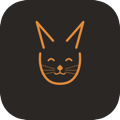

10k users and 40% completion, and i still turned it off. on telling alive from just warm.
hey, i'm rinkesh 👋
i'm a product builder and two-time founder. i make things from scratch, mostly with AI these days. my first company, Savior, was healthcare software that 85 hospitals ran on before Zocdoc bought it in 2020. after that i spent two years at Accel, backing pre-seed founders.
the part i like most is the very beginning, when the problem is still messy and you don't know yet if it'll work. right now i'm building again, in the open, and looking for my next 0→1.
building something 0→1? i'd genuinely like to hear about it.

// track record
S Savior2017–20 · exit
Savior2017–20 · exit
healthcare SaaS that ran daily operations for tier-1 hospitals across India.
- 85 hospitals ran on it, including chains like Fortis and Cloudnine. it cut the time to process a patient and got rid of manual errors.
- it grew through word of mouth, with no sales team.
- i ran it profitably without raising money, and Zocdoc bought it in 2020.
85hospitals
₹0raised
profitablethen acquired
C Career Leap2020–23
Career Leap2020–23
a learning platform where tech professionals built soft skills, taught live by experienced mentors.
- it started as a whatsapp group and grew to 10k users in six months. the app crossed 100k watch hours.
- live cohorts had 40% completion when most online courses see 5 to 10%. i trained 60 people.
- it looked healthy but never made money at scale, so i shut it down in 2023.
10Kusers
100Kwatch hours
40%completion
AAccel Atoms2023–25
Accel India's pre-seed program for 0→1 founders. i ran it end to end.
- picked the founders and built the program across 4 cohorts and 2 tracks (AI and LeapTech).
- worked with each team through the hardest part of going zero to one, from rough idea to fundable.
- two years on the investor side, after two as a founder.
4cohorts
40+founders backed
pre-seedstage
// building now
S

Sniffscan any cat food and see how good it actually is. no sponsored rankings.
5K scans · 1.2K foods rated · free
↗ sniff.fyi
K KnowYourPay
KnowYourPay
find out if you're underpaid for your exact role and city.
1.2K users · 12K checks · 50+ cities
↗ knowyourpay
P Product Sense Lab
Product Sense Lab
practice product-sense interview questions and get instant feedback from AI.
800+ PMs · 3K answers scored · 4.8★
↗ productsenselab.com
VVouchsoon
save and share the places you actually love.
in progress
// writing
01
all writing →
why i shut down Career Leap
02
what 85 hospitals taught me
03
you can't understand a system from the outside. what changed once i researched from inside the building.
building with AI, honestly
where AI actually moves the needle when you're shipping solo, and where it quietly eats your week.